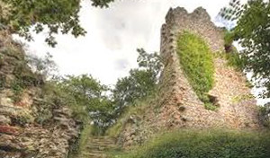
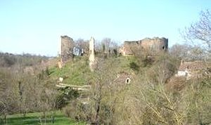
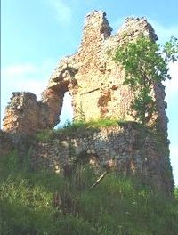
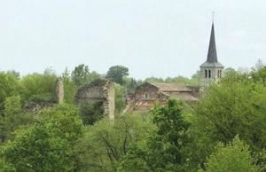
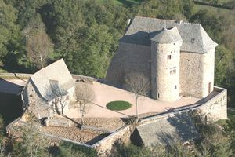
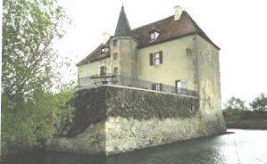
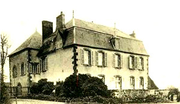

Recensement Jean-Claude Truffet
| Département | 03 — Allier |
| Canton | Montmarault |
| Commune | Murat |
| Type d'édifice | Vestiges |
| Période d'origine | XII |







Trois châteaux à Murat, le Chatignoux du XVe siècle, de Robinière du XIXe siècle et le fort de Murat. CHATIGNOUX en 1301 Johanz de Chategnol tient le fief du seigneur de Bourbon, en 1569 passe au seigneur de Sanssat capitaine de la ville de Bourbon-l'Archambault. Passe à Jean de Fradel de la Grange connu pour avoir défendu Saint-Pourçain contre les ligueurs, passera ensuite aux de la Souche qui vendent le fief au XVIIe siècle à la famille Gaulmin, puis au Dumoncel, ensuite à Antoine Lenoir d'Espinasse en 1753 qui le vend à François Ferron de la Ferronnaye en 1765, en 1774 acheté par Charles de la Botière marquis de Tilly, l'actuel propriétaire est monsieur Eygun.
MURAT, en 1204, Guillaume de Murat. En 1272, Béatrice de Bourgogne, dame de Bourbon, épouse Robert Ier de France, Comte de Clermont. C'est le 6e fils du Roi Louis IX . En 1310, Louis Ier, fils aîné, épouse Marie de Hainaut. En 1317, à la mort de Robert Ier, son fils Louis Ier Comte de Clermont de la Marche et de Castres devient le nouveau seigneur. En 1327, Louis Ier devient le premier Duc de Bourbon. En 1342, Louis Ier meurt. Son fils Louis II est le nouveau Duc de Bourbon. En 1354, Marie de Hainaut décède au château. En 1358, Isabeau de Valois. Au début du XVIe siècle, le Bourbonnais est une province très puissante. Charles III est le Duc de Bourbon mais aussi, Comte de Montpensier, Comte de Forez, Comte de Clermont, Comte de Mercoeur, Duc d'Auvergne. En 1521, la femme de Charles III qu'il avait épousée en 1505 meurt sans avoir donné d'héritier. La mère de François Ier revendique le Bourbonnais comme petite fille de Charles Ier de Bourbon. Durant ces 6 années, Charles III se rebelle et entre en guerre contre le Royaume de France aux cotés des Italiens. En 1527, Charles III meurt au siège de Rome. Conséquence, le Bourbonnais est rattaché au Royaume de France.
ROBINIERES La Robinière constitue un bel exemple de ce type de résidence . L'actuelle grande maison remplace un vieux château du XVIe siècle.
Chatignoux, du XVe siècle, remanié au XVIIe siècle. Grande maison de plan carré avec, au centre de sa façade principale, une tourelle d'escalier octogonale. A l'avant de cette façade, une terrasse bordée d'une balustrade en fer forgé a été édifiée au XIXe siècle. A l'intérieur, chaque niveau comporte 4 pièces symétriques par rapport à l'axe transversal du bâtiment. Au centre, se trouvent deux grandes salles et sur les côtés deux pièces allongées. Au premier étage, les pièces ont été redistribuées par des galandages au XIXe siècle. De l'édifice primitif ne subsistent que cette tourelle d'escalier, les deux portes qui l'encadrent et deux des cheminées. Les abords du château comprennent des douves, des terrasses sur plusieurs niveaux et des jardins. Murat, vestiges du fort (élevé sur l'emplacement d'un poste fortifié de la défense romaine) Le château est construit sur un promontoire escarpé, avec des défenses de sept tours, dont six ronde. L'entrée devait se trouver à l'est, avec accès par pont levis. A la suite se trouvait une porte fortifiée avec couloir voûté. Deux cours intérieures : la basse cour et celle du donjon. Vers 1343, le château Ducal, par sa superficie, la longueur des courtines et la puissance de sa tour, impose le respect de assaillants potentiels. Mais ce n'est pas qu'une forteresse, son habitat est très confortable pour l'époque. Ce château dût être démantelé après la défection du Connétable. Peu de temps après François Ier fait démolir plusieurs châteaux dans la région dont celui de Murat. En 1569, un rapport demandé par le roi Charles IX fait état de l'abandon du château, et des ruines qui le composent. En 1792, les révolutionnaires brûlent les archives de la commune.
Duc de Bourbon"
Vestiges de Murat et château de Chatignoux et de la Robinière à Murat